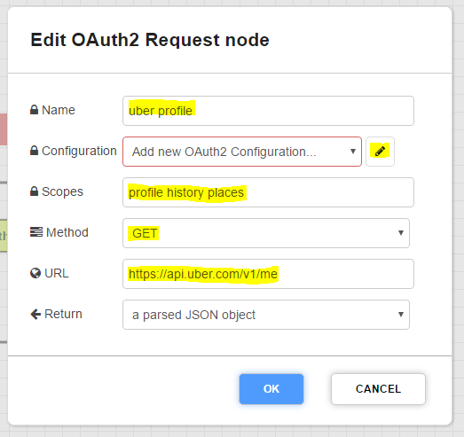
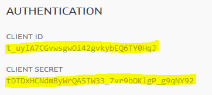
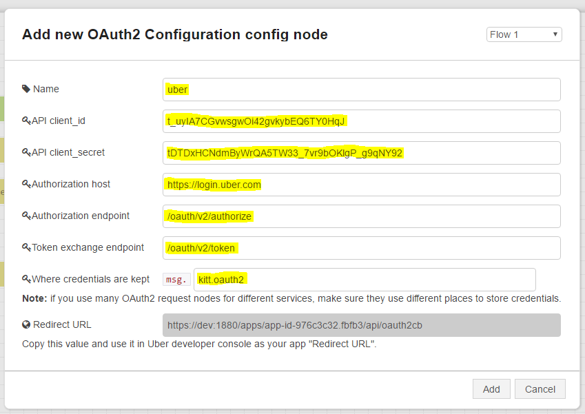
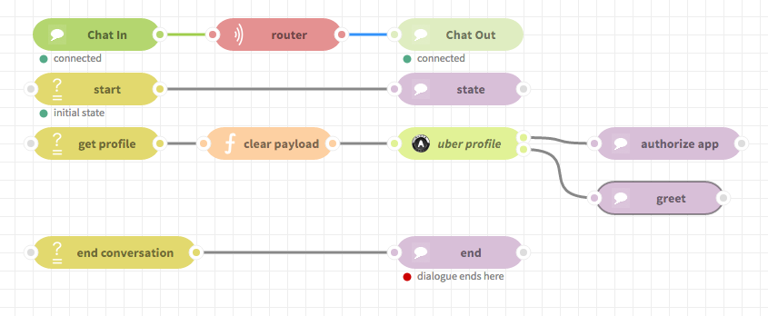
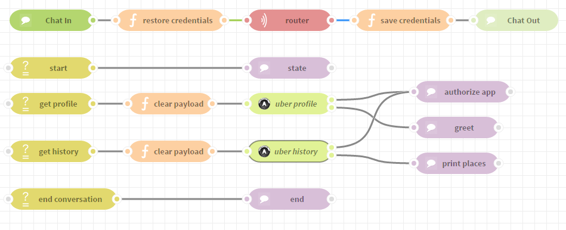

OAuth2/Uber Tutorials¶
Table of Contents
Introduction¶
This tutorial shows how to use OAuth2 Request node to make HTTP(S) requests requiring OAuth2 app authentication with user authorization. OAuth2 authorization is helpful when your bot needs to take actions on behalf of the user.
This tutorial assumes:
- you know how to create applications,
- you know how to add nodes,
- you have an Uber account.
Note
The OAuth2 request node is only usable in scenarios when a user has an access to a browser and can open links provided by an application. For example: using it in an app that communicates with SMS messages may not be a good idea, because some old feature phones don’t have any web browsers or users don’t want to or can’t use their data connection.
A simple descripton of how OAuth2 user-authorized requests flow¶
- The application asks the service to provide access credentials for user account and given scope of data/resources, by asking the user to open a specially crafted link in a browser. The link opens a page provided by the service.
- If the user accepts, then the service redirects the browser to a predefined application page, passing a special one-use token.
- The application exchanges the received one-use token for a multi-use access token (using the service, via server-to-server request).
- The application can use the access token to make requests that retrieve user-related resources.
The access token can be used many times, but can expire. The expiration time can be as short as one hour or as long as one month (there is no rule, you have to check the service documentation).
The service can provide a special refresh token that can be used to get a new access token without user interaction. This token can expire too (it’s service-dependent).
The OAuth2 Request node manages token acqusition and refreshing automatically.
Registering an application in Uber service¶
Go to Uber Developer Dashboard. Press the “+New App” button. Select “Rides API”, enter your app name, description, read the terms and if you agree with them, fill the corresponding checkbox, press the “Create” button. That’s all (for now), we’ll be back here later.
Creating the bot¶
- Create a new application.
- Add the following nodes to the flow:
- Chat In
- Chat Out
- router
- 3x enter
- function
- OAuth2 Request
- 4x state (yes, one more than enter states)
- Connect the nodes to look like this:
- Edit the first enter node, name it “start”, remove the existing (empty) condition and check the “Initial state” option. Skip the first state node.
- Edit the second enter node, name it “get profile”, let it check the payload for
profile.
- Edit the function node, name it “clear payload” and enter the following code in the function body:
msg.payload = null;
return msg;
- Now comes the fun part, we’ll set up the OAuth2 Request node, so double click it to open the editor.
Name it “uber profile”
Enter
profile history placesin the “Scopes” field.Set method to
GET.Enter
https://api.uber.com/v1/mein the URL field.Upon user authorization, the URL field will immediately make a request to
https://api.uber.com/v1/meand fetch your profile information. You can optionally leave this field empty, then upon user authorization the OAuth2 node will just output obtained credentials specificed in the next step (by default tomsg.kitt.oauth2).Let’s configure the Uber OAuth2 service details and credentials (don’t close this window yet).
Note
Credentials are stored by assigning them to defined scopes. If you have many OAuth2 Request nodes in the same app (or even in many apps if they share OAuth2 credentials), you may want to use the biggest common set of scopes, so user will have to authorize your app only once (and give access every piece of data you want at once).
- Click on the pencil icon in the “Configuration” line to add a new configuration:
Name it “uber”.
Go to the Uber Developer Dashboard, open your application details, copy “Client ID” and “Client secret” to OAuth2 Configuration in ChatFlow,
Don’t try to copy those values from this tutorial, data shown here is fake.
Enter
https://login.uber.comin the “Authorization host” field.Enter
/oauth/v2/authorizein the “Authorization endpoint” field.Enter
/oauth/v2/tokenin the “Token exchange endpoint” field.Change the “Where credentials are kept” value to
kitt.oauth2Click on the gray “Redirect URL” field to copy its value to your clipboard.
You can save settings in both dialog windows now.

Note
OAuth2 request node tries to reuse credentials it obtained in the past, so the user isn’t bothered
with clicking on links on each request. The acquired credentials are kept in the specified property
of a message. By using the value kitt.oauth2, we can keep those credentials in the “dialogue” (session) storage.
You can use the data saved in this property to keep credentials in some more persistent storage (like a database).
- Go to your application in “Uber Developer Dashboard”, switch to “Authorizations” tab and paste the address you copied into the “Redirect URL” field. You also have to enter any valid http address in the “Privacy policy url” (it’s a required field).
- Enable
profile,placesandhistoryin the General Scopes section.
- Don’t forget to save those settings.
- Edit the second state node (the one connected to the upper OAuth2 output), name it “authorize app” and enter the following code in the function body:
msg.kitt._responses = ['Please authorize this app: ' + msg.oauth2.url];
return msg;
Note
The first (upper) output of this node is used to ask the user for authorization to access his/her data. If the OAuth2 node can use credentials (access token plus other data) that it acquired previously and those credentials are still valid, then this node can proceed without asking the user to accept the access again (and a message won’t be emmited).
Only when the user authorizes the access, the OAuth2 request node will proceed.
- Edit the third state node (the one connected to the lower OAuth2 output), name it “greet” and enter the following code in the function body:
msg.kitt._responses = ['Hello, ' + msg.payload.first_name + '!'];
return msg;
Note
The second output of the OAuth2 Request node is used to pass the data received from the server. It’s mostly compatible with the HTTP Request node output.
- Edit the third enter node, name it “end conversation”, let it check the payload for
bye.
- Edit the fourth state node, name it “end”, you can leave the function body unchanged, set the
“Output text” to
Good bye!and enable the “Dialogue ends here” option.
The complete application flow should look like this:

If you have had any problems, you can download an example application, all you have to do is fill in the “Client ID” and “Client Secret” fields.
Now you can test your application. Open the Chat panel and send a
profilemessage. The application should ask you to authorize its access to your data. Click on the provided link and press “Accept” on the Uber page. After that, the application should greet you with your first name (read from your Uber profile).If you send a
profilemessage again, then the application will make a request again, but because it has obtained valid credentials (access token) previously, it can do it without asking you to authorize it again.When you send a
byemessage, then the dialogue (session) will end and those credentials will be forgotten.
Reusing access tokens¶
Now let’s assume that credentials are kept in some persistent storage and use two requests to access different resources. For simplicity of this tutorial we won’t use any “real” storage yet.
19. Open the configuration editor in OAuth2 Request node and change the field named “Where credentials are kept” to uber_oauth2.
Data stored in msg.kitt.* is persisted in the dialog (session) storage by the router node, but data stored in other properties of msg is not.
Leave the rest of the fields unchanged.
If you deploy and test the application now, then you’ll see, that the user is asked for authorization every time we want to access his/her profile.
- Now add (and connect) two function nodes, one between the “Chat In” and the router, and another between the router and the “Chat out” node, so it will look like this:
Note
If you drop a node from the palette on an existing connection, then that connection will be “split” and the new node will be automatically connected. The connection is drawn with a dashed line (not a solid one) when this will happen.
- Edit the function node placed before the router, name it “restore credentials” and enter the following code in the function body:
msg.uber_oauth2 = global.get('mockDatabase');
return msg;
Note
We’re using the global application storage as a mock database. As you’re the only possible user of the application, you don’t have to know which user the credentials object belong to. In a real-world scenario you’d have to store credentials in some collection/table where the user identifier is the (primary) key.
This is very important, because if you do it the “wrong” way (like in this simplified example), then you’ll give access to protected resources to users not “owning” these resources.
- Edit the function node placed after the router, name it “save credentials” and enter the following code in the function body:
if (msg.uber_oauth2) {
global.set('mockDatabase', msg.uber_oauth2);
}
- Now the application will ask for credentials only once, but let’s not stop here and let’s
add a second “command” that will access another Uber resource. Do this by adding following nodes to the flow:
- enter
- function
- OAuth2 Request
- state
- Connect the new nodes like in the example below. Don’t forget to link the first output of the new OAuth2 Request node to the existing state node called “authorize app”. Existing nodes and connections were “faded out” in the image below.
- Edit the added enter node, name it “get history” and let check the payload for
history.
- Copy the contents of the existing “clear payload” function node to the new function node (so after this step there are two “clear payload” function nodes).
- Edit the second OAuth2 Request node and:
- Name it “uber history”
- Use the existing configration called
uber. - Enter
profile history placesin the “Scopes” field (the same as those used by the first request node, this is important). - Set method to
GET. - Enter
https://api.uber.com/v1.2/historyin the URL field.
- Edit the last added state node, name it “print places”, and enter the following code in the function body:
var response = 'You ordered ' + msg.payload.count + ' rides.';
if (msg.payload.history.length > 0) {
response += ' The first one started in ' + msg.payload.history[0].start_city.display_name + '.';
}
msg.kitt._responses = [response];
return msg;
- Now you can test your application again. If you authorized it after setting up the “save credentials” node, then you’ll see that it won’t ask for authorization.
What’s more - if you end the dialogue session by sending “bye”, and use commands accessing Uber resources, you’ll see that the app will reuse the
credentials it obtained and stored in the mock “database” (
globalobject).
The completed application after this part should look like the one below:
You can download the source code of this application :download:`here <_static/json/oauth2-uber-chat-adv.json>`_.